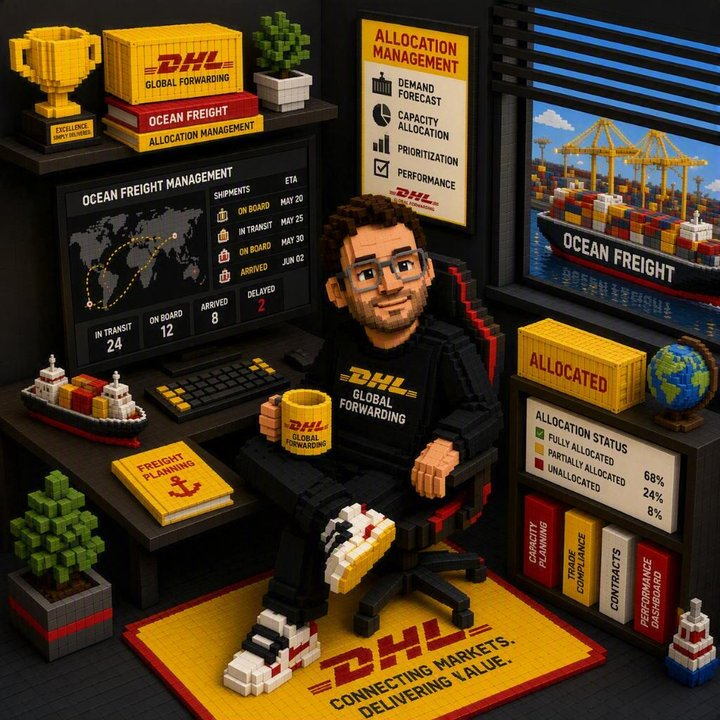

Jörn Hoppe
20+ years leading international ocean freight teams and P&L across Europe, Asia and the Americas — now building a second track record turning AI capabilities into governed, measurable improvements for logistics organizations.

Senior logistics and ocean freight executive with 20+ years leading international teams and P&L across Europe, Asia and the Americas, combining deep operational and commercial expertise with a modern focus on AI-enabled transformation. Now building a practitioner track record in logistics AI — turning emerging AI capabilities into practical, governed and measurable improvements that make teams faster, more data-driven and more resilient.
Turned a loss-making ocean freight business around to sustained EBIT profitability within 12 months (CEVA Germany, 2021–2022).
People led across P&L portfolios up to USD 130M, spanning Germany and Greater China.
Pioneering AI-enabled transformation in ocean carrier & yield management at DHL Global Forwarding — from manual reporting to AI-assisted market intelligence and decision support.
Senior Manager Global Ocean Carrier & Yield Management
DHL Global Forwarding · Bremen, Germany
May 2024 – Present
Director Ocean Product Services — Germany, Austria, Switzerland & Eastern Europe
Crane Worldwide Germany GmbH · Hamburg, Germany
Apr 2023 – May 2024
Head of Ocean DACH — Germany, Austria & Switzerland
CEVA Logistics · Hong Kong & Bremen, Germany
Dec 2020 – Feb 2023
Director Global Ocean Allocation & Operations Management
CEVA Logistics · Hong Kong
Apr 2017 – Mar 2021
Earlier Career Highlights
General Manager Ocean Operations Management, Greater China
CEVA Logistics · Hong Kong · 2015 – 2017
Led approximately 500 ocean export and import operators across China, Hong Kong and Taiwan; shared P&L responsibility above USD 35M; improved productivity in key stations and strengthened governance, training and shared-service structures.
Manager Global Business Process Ocean
CEVA Logistics · Hong Kong · 2014 – 2015
Governed global standard ocean operations processes and supported development, testing, training and deployment of global process and system tools, including EDI, allocation, reporting and compliance-related solutions.
Business SME / Project Manager / Process Specialist
CEVA Logistics · Bremen & Hong Kong · 2011 – 2014
Led international process transformation and rollout projects across regions, translating business requirements into operational tools, training and standardized workflows.
Ocean Export, Pricing & Development Leadership Roles
Eagle Global Logistics / CEVA Logistics / Group7 · Bremen, Germany · 2003 – 2011
Progressed through operational, pricing, customer service, sales support and supervisory roles covering ocean and air freight, contract management, tender support, customer implementations and apprentice training.
Apprenticeship
Circle International · Bremen, Germany · 2000 – 2003
Completed commercial freight forwarding training across airfreight, ocean freight, road freight, warehousing and finance.
Outside of my day job, I design, build and personally operate a private, production-grade AI and infrastructure platform — Hoppe.home. It's a real environment in daily use, not a lab or a demo, and it's where I turn my logistics-honed operating discipline into hands-on software and AI practice.
Self-managed servers across Windows and Linux, built out as a genuine enterprise-style environment — domain services, certificate authority, monitoring and automated backups.
Custom-built applications running in daily production use — spanning financial and tax tooling, monitoring dashboards, knowledge management and a browser-based game platform.
A resident AI agent operates as a genuine working partner — handling day-to-day development, operations and monitoring continuously, always under my direct oversight.
The platform is a real working partnership between human oversight and an autonomous AI operator: I set direction, priorities and guardrails; the AI handles day-to-day engineering, infrastructure operations, monitoring and documentation. Every significant change is tracked, reviewed and kept inside clear governance boundaries — the same operating discipline I apply professionally, brought home and applied at a personal scale. Meet Joanna, Hoppe.home's resident AI operator →
Commercial Training Certificate
Business School Ellmerstrasse · Bremen, Germany · Aug 2000 – Jan 2003
Advanced Certificate of Secondary Education
Secondary School Thedinghausen · Thedinghausen, Germany · Jul 1994 – Jul 2000